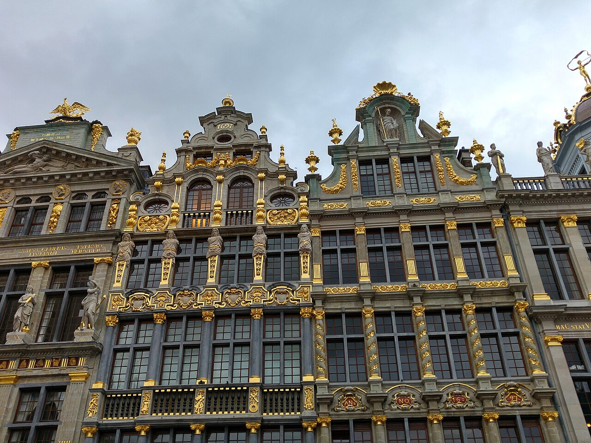

Bruges and Ghent with children
Five slow-city days across Flanders, with two bases, one protected rail transfer and enough recovery time for a family to enjoy the route. In Alfred, use Multi-City.

A compact route with the fragile parts visible
Illustrative plan for two adults and two school-age children, moderate pace, mid-range budget and interests in heritage, canals and hands-on culture. Dates and live details must be checked before booking.
Two adults and two children; keep one main anchor per day and protect a midday reset.
Bruges nights 1–2, then Ghent nights 3–4; the inter-city rail leg is not paired with a major attraction.
Check rail times, museum entry, boat departures, weather, access and current supplier terms at decision time.
Planning boundary: this page contains a reasoned sample route, not live availability or a booking. Opening a booking-hub link indicates intent only.
Why this route works
Bruges is the softer landing: a walkable historic centre and canal context without asking the family to change hotels immediately. Ghent then adds a livelier second base with the Castle of the Counts, family-oriented museums and a different evening rhythm. The transfer is deliberately protected so the plan can absorb a late departure, luggage delay or tired children.
Base assumptions: arrive via Brussels, use rail for the regional move, and choose accommodation within an easy walk or short local transfer of the station/centre. Confirm the actual accommodation location, lift access, luggage storage and family room before committing.
Day 1 — Arrive in Bruges and make the centre feel familiar
Transfer from Brussels to Bruges, settle near the historic centre, then take an unhurried loop through Markt, Burg Square and the Dijver waterfront before dinner. The decision is to orientate rather than add a ticketed attraction after travel.
Fallback: if arrival slips past 17:00 or luggage is delayed, shorten the loop to Burg Square and the nearest meal; check current rail disruption and restaurant opening before travel.
Day 2 — Bruges canals first, one indoor anchor second
Start at the official boat-trip jetties around Huidenvettersplein/Rozenhoedkaai, then walk via the Begijnhof and Minnewater before choosing one indoor anchor such as the Groeninge Museum. Keep lunch in the central belt so the family is not crossing the city for a second reservation.
Fallback: if boats are full, weather is poor or a child needs quiet, use the city map for a short canal-side walk and move the indoor anchor earlier; confirm boat departures, age rules and museum access live.
Day 3 — Protected Bruges-to-Ghent transfer and a small first look
Check out after breakfast, allow a luggage buffer at Bruges station, and take the train to Ghent. After check-in or bag drop, choose the Korenlei–Graslei waterfront and a short walk towards the Vrijdagmarkt rather than attempting a full museum day.
Fallback: if the room is not ready, store bags and use a café/park reset near the centre; if the rail leg is disrupted, make this a Bruges recovery morning and shift Ghent’s first anchor to Day 4.
Day 4 — Gravensteen and a child-led Ghent afternoon
Use Gravensteen as the morning anchor, then pause around the historic centre before choosing one child-suitable afternoon option: the House of Alijn, a family museum programme or a slow Lys-side walk. The route keeps the Castle, meal and afternoon within the central area.
Fallback: if the castle is sold out, too intense or unsuitable for the youngest traveller, replace it with the House of Alijn or a short tram/park reset; verify current entry, accessibility and family programming.
Day 5 — Leave room for the journey home
Keep the final morning unbooked: breakfast near the base, a short revisit to a favourite square or a final bakery stop, then collect luggage and travel to the departure station/airport with a deliberately generous buffer.
Fallback: if departure is late, use the morning for a single confirmed indoor activity; if it is early, skip the activity entirely. Recheck rail, airport and baggage requirements before leaving the accommodation.
Planning notes
Dates are illustrative. Check current rail schedules, platform changes, museum and boat access, opening hours, weather, walking surfaces, child suitability, baggage rules, cancellation terms and supplier availability before committing. Keep the route editable if the family’s energy or transport changes. Alfred can help turn the party, dates, pace, budget and interests into an editable/shareable plan; it does not guarantee live facts or complete a booking.
Build the full plan in Alfred
Generate, validate and edit the complete itinerary in the Alfred app.
Plan a trip